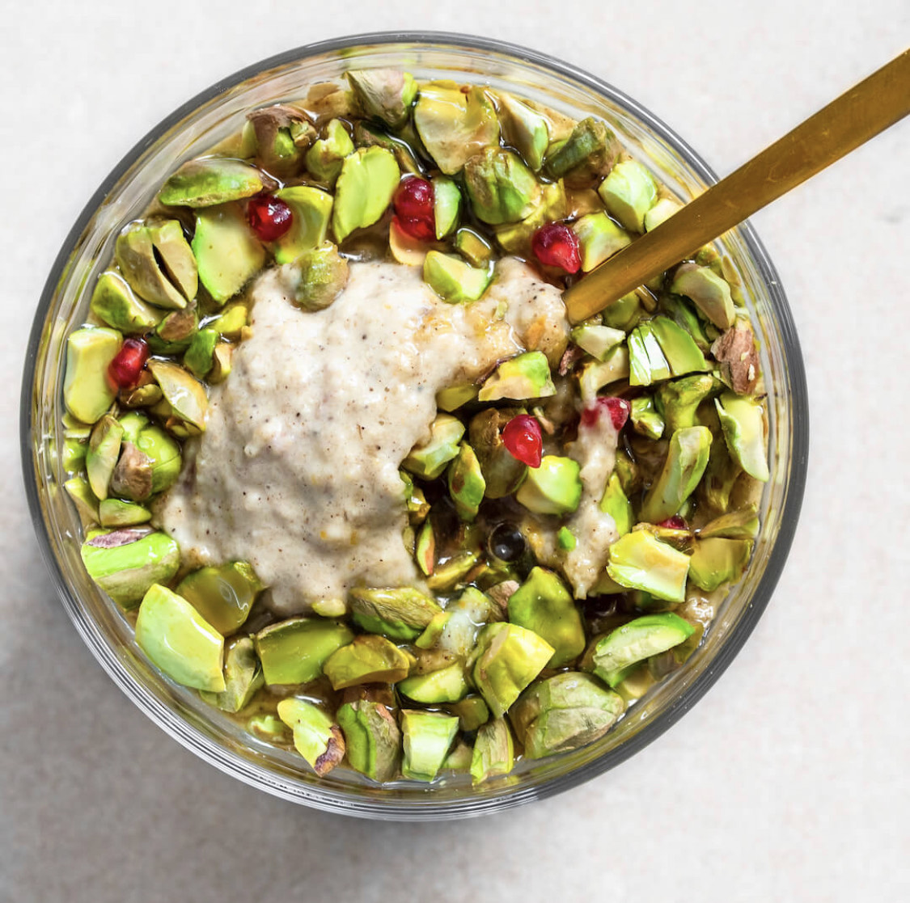

Blended Baklava Oats

Description:
A delightfully decadent way to start the day, or an invigorating end to a warm meal with warm hearts. You decide!
Does this taste like baklava or fruit loops? After you give this recipe a try email me at hazelrhudson.com and let me know what you think!
You may top with pistachio butter for a creamy twist and garnish with pomegranate seeds for some added holiday cheer.
If you substitute the orange or lemon zests for juices instead this will alter the flavor profile and is not recommended.
This recipe is from fivesec health, and all credit goes to the creator. Check them out on Instagram for more deliciousness!
Ingredients:
Oats:
- 1 C. Rolled Oats
- 1 C. Unsweetened Oat Milk
- 2 tbs. Unsweetened Almond Butter
- 1 tbs. Maple Syrup
- 2 tsp. Orange Zest
- 2 tsp. Lemon Zest
- ½ tsp. Ground Cinnamon
- ½ tsp. Ground Cardamom
Toppings:
- 8 tbs. Raw Pistachio Nuts
- 1 tbs. Maple Syrup
Optional Toppings:
- 1 tsp. Pistachio Butter
- ½ tsp. Pomegranate Seeds
Steps:
- Add all ingredients for oats to blender and blend until smooth consistency achieved
- Pour oat mixture to a bowl or jar and set aside to thicken for 5 minutes or until desired consistency reached
- Roughly chop pistachios for topping
- Spoons or pour oats into bowls for serving
- Sprinkle with chopped pistachios
- Drizzle maple syrup on top
- Optional: Garnish with pomegranate seeds
- Optional: Serve with pistachio butter